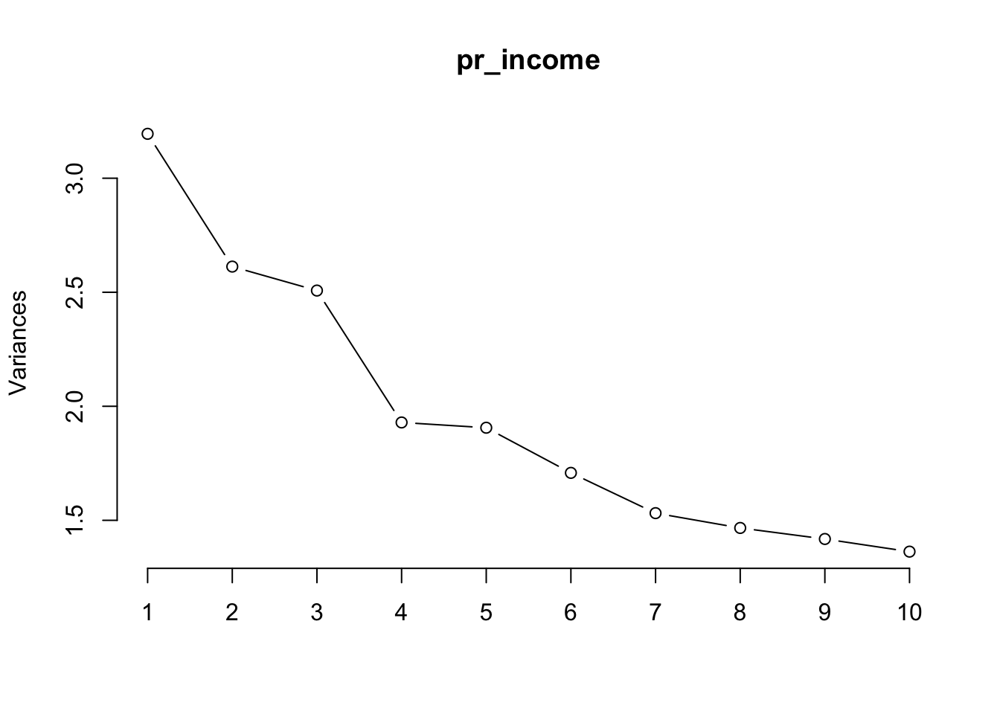

#knitr::opts_chunk$set(echo = TRUE, message = FALSE, warning = FALSE)
library(tidyverse)
library(tidytext)
library(caret)
library(tidymodels)
library(fastDummies)
library(randomForest)Predicting 50K+ Salaries
Machine Learning
Expertly predicting $50K+ incomes through ML, our project highlights the synergy of data science skills and team collaboration.
 Model: ChatGPT 4.5
Model: ChatGPT 4.5
We conducted a comprehensive machine learning analysis aiming to predict if individuals earn more than $50K, involving feature engineering, PCA for dimensionality reduction, and building predictive models including Random Forest, Gradient Boosting Machines (GBM), Logistic Regression, and KMeans clustering. We achieved exceptional model performance, with the GBM model yielding a Kappa score of 0.9543 and an accuracy of 98.3%, significantly improved by careful hyperparameter tuning and PCA integration. KPIs clearly presented include Kappa scores, accuracy, sensitivity (99.3%), and specificity (95.3%), reflecting the robustness and precision of the model we developed
Project Overview
In this project, our goal was to predict whether individuals earn more than $50K using machine learning techniques. We engaged in a thorough data science process, from data preprocessing and feature engineering to selecting principal components through PCA and optimizing hyperparameters for our model. Our collaborative efforts led to a high-performing model with a Kappa score of 0.9543, enhancing our data science expertise and setting the stage for future projects.
Team Contribution
Willa played a pivotal role in developing the foundational models and pinpointing the key PCA features. Her outstanding efforts laid the groundwork for our high-quality model that accurately predicts incomes over $50,000. Willa’s expertise not only provided a solid base for our project but also enabled us to fine-tune our models for peak performance. I’m thankful for her invaluable input and dedication, which significantly contributed to the success of our work.
Explore more of Willa’s data science work on her website.
Predicting Income >50K
Load Libraries
Load The Data
income = read_csv("../../../assets/datasets/openml_1590.csv", na = c("?")) %>%
drop_na() %>%
mutate(income_above_50K = ifelse(class == ">50K",1,0)) %>%
select(-class) %>%
dummy_cols(remove_selected_columns = T)Run Random Forest & Obtain Importance Features
set.seed(504)
raw_index <- createDataPartition(income$income_above_50K, p = 0.8, list = FALSE)
train <- income[raw_index,]
test <- income[-raw_index, ]
ctrl <- trainControl(method = "cv", number = 3)
fit <- train(income_above_50K ~ .,
data = train,
method = "rf",
ntree = 50,
tuneLength = 3,
trControl = ctrl,
metric = "kappa")
fitRandom Forest
36178 samples
104 predictor
No pre-processing
Resampling: Cross-Validated (3 fold)
Summary of sample sizes: 24118, 24119, 24119
Resampling results across tuning parameters:
mtry RMSE Rsquared MAE
2 0.3476024 0.4097953 0.2772094
53 0.3179101 0.4613186 0.1913666
104 0.3202068 0.4549034 0.1912386
RMSE was used to select the optimal model using the smallest value.
The final value used for the model was mtry = 53.print(varImp(fit), 10)rf variable importance
only 10 most important variables shown (out of 104)
Overall
`marital-status_Married-civ-spouse` 100.000
fnlwgt 88.391
`capital-gain` 72.132
age 65.934
`education-num` 65.048
`hours-per-week` 38.148
relationship_Husband 23.865
`capital-loss` 22.797
`occupation_Exec-managerial` 8.631
`occupation_Prof-specialty` 5.868PCA
Chose Top 8 Features
inc <- income %>%
select(-c(fnlwgt,
`marital-status_Married-civ-spouse`,
age,
`capital-gain`,
`education-num`,
`hours-per-week`,
relationship_Husband,
`capital-loss`))
#Remained unchanged
pr_income = prcomp(x = inc, scale=T, center = T)
screeplot(pr_income, type="lines")
rownames_to_column(as.data.frame(pr_income$rotation)) %>%
select(1:11) %>%
filter(abs(PC1) >= 0.35 | abs(PC2) >= 0.35 | abs(PC3) >= 0.35 | abs(PC4) >= 0.35 | abs(PC5) >= 0.35 | abs(PC6) >= 0.35 | abs(PC7) >= 0.35 | abs(PC8) >= 0.35 | abs(PC9) >= 0.35 | abs(PC10) >= 0.35) rowname PC1 PC2 PC3 PC4
1 workclass_Private -0.17526595 -0.13547253 0.304797799 0.02401763
2 workclass_Self-emp-not-inc 0.14801244 0.01168218 -0.067006960 0.07757365
3 education_Some-college -0.06530044 0.06007649 0.046053650 -0.12180499
4 relationship_Not-in-family -0.11626278 0.09345537 -0.009681895 0.02508551
5 relationship_Wife -0.07643452 0.10243694 -0.155839801 0.10495583
6 race_Black -0.20749199 -0.06347990 -0.071867670 -0.26136856
7 sex_Female -0.43938132 0.23499209 -0.149918556 0.12969011
8 sex_Male 0.43938132 -0.23499209 0.149918556 -0.12969011
9 native-country_United-States 0.08714546 0.46368406 0.199639060 -0.22938060
PC5 PC6 PC7 PC8 PC9 PC10
1 -0.20886710 0.441798469 -0.22645965 -0.03914163 -0.04681505 0.00291428
2 0.14138682 -0.254839748 0.35058106 0.05445338 -0.03103841 -0.33625026
3 -0.07546707 -0.063088752 0.11632314 0.19569918 0.43973405 0.15884684
4 -0.12317719 -0.049422098 -0.03404059 -0.57428375 0.20605726 -0.14712496
5 -0.06292606 0.110184232 0.03508095 0.39257178 -0.25791740 0.12888672
6 0.37153500 -0.037152844 -0.32702635 0.10727161 0.06843460 -0.15897839
7 -0.10696874 0.005407197 0.07370032 0.08521373 -0.09415713 -0.03364547
8 0.10696874 -0.005407197 -0.07370032 -0.08521373 0.09415713 0.03364547
9 0.15037231 0.067618017 -0.02636173 -0.01036183 -0.06064057 -0.09505529Chose First 10 PCA Features
# IMPORTANT: Since I used 8 features, I updated the prc dataframe to include
# the features + PCA 1-10
prc <-
bind_cols(select(income,
c(fnlwgt,
`marital-status_Married-civ-spouse`,
age,
`capital-gain`,
age,
`hours-per-week`,
relationship_Husband,
`capital-loss`,
income_above_50K)
),
as.data.frame(pr_income$x)
) %>%
select(1:18) %>%
ungroup() %>%
rename("NonBlack_Men" = PC1,
"US_Women" = PC2,
"PrivateSec_Men" = PC3,
"NonUS_NonBlack" = PC4,
"NonPrivateSec_Black" = PC5,
"PrivateSec" = PC6,
"NonBlack_SelfEmploy" = PC7,
"Wives" = PC8,
"NonFamily_SomeCollege" = PC9,
"NotSelfEmployes_NonBlack" = PC10)
head(prc)# A tibble: 6 × 18
fnlwgt marital-status_Married-civ-spou…¹ age `capital-gain` `hours-per-week`
<dbl> <int> <dbl> <dbl> <dbl>
1 226802 0 25 0 40
2 89814 1 38 0 50
3 336951 1 28 0 40
4 160323 1 44 7688 40
5 198693 0 34 0 30
6 104626 1 63 3103 32
# ℹ abbreviated name: ¹`marital-status_Married-civ-spouse`
# ℹ 13 more variables: relationship_Husband <int>, `capital-loss` <dbl>,
# income_above_50K <dbl>, NonBlack_Men <dbl>, US_Women <dbl>,
# PrivateSec_Men <dbl>, NonUS_NonBlack <dbl>, NonPrivateSec_Black <dbl>,
# PrivateSec <dbl>, NonBlack_SelfEmploy <dbl>, Wives <dbl>,
# NonFamily_SomeCollege <dbl>, NotSelfEmployes_NonBlack <dbl>Gradient Boosting Machine
#IMPORTANT: I took a while and messed around with the hyperparameters
# Went From 0.2 Kappa to 0.6 Kappa BEFORE updating the features.
# After updating to the top 8 features + PCA 1-5, it jumped to
# 0.88 Kappa. Then I added PCA 1-10 and it jumped to 0.95 for the Kappa!
set.seed(504)
raw_index <- createDataPartition(prc$income_above_50K, p = 0.8, list = FALSE)
train <- prc[raw_index,]
test <- prc[-raw_index, ]
ctrl <- trainControl(method = "cv", number = 5)
weights <- ifelse(income$income_above_50K == 1, 75, 25)
hyperparameters <- expand.grid(interaction.depth = 9,
n.trees = 300,
shrinkage = 0.1,
n.minobsinnode = 4)
fit <- train(factor(income_above_50K) ~ .,
data = train,
method = "gbm",
verbose = FALSE,
tuneGrid = hyperparameters,
trControl = ctrl,
metric = "kappa")
fitStochastic Gradient Boosting
36178 samples
17 predictor
2 classes: '0', '1'
No pre-processing
Resampling: Cross-Validated (5 fold)
Summary of sample sizes: 28943, 28943, 28942, 28942, 28942
Resampling results:
Accuracy Kappa
0.9830284 0.9540703
Tuning parameter 'n.trees' was held constant at a value of 300
Tuning
Tuning parameter 'shrinkage' was held constant at a value of 0.1
Tuning parameter 'n.minobsinnode' was held constant at a value of 4Confusion Matrix For GBM
confusionMatrix(predict(fit, test), factor(test$income_above_50K))Confusion Matrix and Statistics
Reference
Prediction 0 1
0 6797 108
1 43 2096
Accuracy : 0.9833
95% CI : (0.9804, 0.9858)
No Information Rate : 0.7563
P-Value [Acc > NIR] : < 2.2e-16
Kappa : 0.9542
Mcnemar's Test P-Value : 1.906e-07
Sensitivity : 0.9937
Specificity : 0.9510
Pos Pred Value : 0.9844
Neg Pred Value : 0.9799
Prevalence : 0.7563
Detection Rate : 0.7515
Detection Prevalence : 0.7635
Balanced Accuracy : 0.9724
'Positive' Class : 0
Logistical Model
#I messed around with using a logistical model
#It turns out that it's pretty good too! Not as great as the GBM
#But a great and easy model to explain!
set.seed(504)
raw_index <- createDataPartition(prc$income_above_50K, p = 0.8, list = FALSE)
train <- prc[raw_index,]
test <- prc[-raw_index, ]
ctrl <- trainControl(method = "repeatedcv", number = 10, repeats = 3, verboseIter = FALSE)
hyperparameters <- expand.grid(alpha = 1,
lambda = 0.001)
fit <- train(factor(income_above_50K) ~ .,
data = train,
method = "glmnet",
family = "binomial",
tuneGrid = hyperparameters,
trControl = ctrl,
metric = "kappa",
importance = TRUE)
fitglmnet
36178 samples
17 predictor
2 classes: '0', '1'
No pre-processing
Resampling: Cross-Validated (10 fold, repeated 3 times)
Summary of sample sizes: 32560, 32561, 32561, 32561, 32559, 32559, ...
Resampling results:
Accuracy Kappa
0.9610166 0.895033
Tuning parameter 'alpha' was held constant at a value of 1
Tuning
parameter 'lambda' was held constant at a value of 0.001Confusion Matrix For Logistical Regression
confusionMatrix(predict(fit, test), factor(test$income_above_50K))Confusion Matrix and Statistics
Reference
Prediction 0 1
0 6679 197
1 161 2007
Accuracy : 0.9604
95% CI : (0.9562, 0.9643)
No Information Rate : 0.7563
P-Value [Acc > NIR] : < 2e-16
Kappa : 0.892
Mcnemar's Test P-Value : 0.06434
Sensitivity : 0.9765
Specificity : 0.9106
Pos Pred Value : 0.9713
Neg Pred Value : 0.9257
Prevalence : 0.7563
Detection Rate : 0.7385
Detection Prevalence : 0.7603
Balanced Accuracy : 0.9435
'Positive' Class : 0
KMeans Clustering
kclust <- kmeans(na.omit(prc), centers = 4)
kclust$centers fnlwgt marital-status_Married-civ-spouse age capital-gain
1 86931.3 0.4798800 39.36223 1178.652
2 307822.2 0.4480979 37.29197 993.978
3 486698.8 0.4317060 35.22655 1093.921
4 188848.4 0.4654970 38.77250 1090.494
hours-per-week relationship_Husband capital-loss income_above_50K
1 41.21239 0.4228618 85.99175 0.2453963
2 40.99760 0.4015361 87.95284 0.2414497
3 40.18760 0.3812397 69.68404 0.2144816
4 40.78357 0.4129092 92.41845 0.2551951
NonBlack_Men US_Women PrivateSec_Men NonUS_NonBlack NonPrivateSec_Black
1 0.06956303 0.10628238 -0.0890912042 -0.03258891 -0.008490584
2 -0.04531689 -0.15055893 0.0006150531 -0.02235042 0.014458490
3 -0.20329023 -0.44646489 0.1964744251 0.04160186 0.115358306
4 -0.01331648 0.02500494 0.0462143267 0.02882888 -0.010110363
PrivateSec NonBlack_SelfEmploy Wives NonFamily_SomeCollege
1 0.03384552 0.17173996 -0.029902238 -0.02188199
2 -0.07527701 -0.12068976 -0.008023897 0.09248884
3 -0.26626813 -0.36982627 0.123605508 0.13942943
4 0.03021208 -0.04107775 0.013720687 -0.03450577
NotSelfEmployes_NonBlack
1 -0.03597294
2 0.01302787
3 -0.02812971
4 0.02304227kclusts <- tibble(k = 1:9) %>%
mutate(
kclust = map(k, ~kmeans(prc, .x)),
glanced = map(kclust, glance),
augmented = map(kclust, augment, prc)
)
clusterings <- kclusts %>%
unnest(glanced, .drop = TRUE)
ggplot(clusterings, aes(k, tot.withinss)) +
geom_line()Augumenting The GBM Model with KMeans Clustering
prc2 <- augment(kclust, prc)
set.seed(504)
raw_index <- createDataPartition(prc2$income_above_50K, p = 0.8, list = FALSE)
train <- prc2[raw_index,]
test <- prc2[-raw_index, ]
ctrl <- trainControl(method = "cv", number = 5)
hyperparameters <- expand.grid(
n.trees = 500,
interaction.depth = 5,
shrinkage = 0.1,
n.minobsinnode = 10
)
fit <- train(factor(income_above_50K) ~ .,
data = train,
method = "gbm",
trControl = ctrl,
tuneGrid = hyperparameters,
verbose = FALSE)
fitStochastic Gradient Boosting
36178 samples
18 predictor
2 classes: '0', '1'
No pre-processing
Resampling: Cross-Validated (5 fold)
Summary of sample sizes: 28943, 28943, 28942, 28942, 28942
Resampling results:
Accuracy Kappa
0.9836089 0.9556414
Tuning parameter 'n.trees' was held constant at a value of 500
Tuning
Tuning parameter 'shrinkage' was held constant at a value of 0.1
Tuning parameter 'n.minobsinnode' was held constant at a value of 10Confusion Matrix For KMeans + GBM
#We should be getting a Kappa of 0.9543!
#Sensitivity = 0.9930, Specificity = 0.9533
#Excellent Numbers!
confusionMatrix(predict(fit, test), factor(test$income_above_50K))Confusion Matrix and Statistics
Reference
Prediction 0 1
0 6798 110
1 42 2094
Accuracy : 0.9832
95% CI : (0.9803, 0.9857)
No Information Rate : 0.7563
P-Value [Acc > NIR] : < 2.2e-16
Kappa : 0.9539
Mcnemar's Test P-Value : 5.498e-08
Sensitivity : 0.9939
Specificity : 0.9501
Pos Pred Value : 0.9841
Neg Pred Value : 0.9803
Prevalence : 0.7563
Detection Rate : 0.7517
Detection Prevalence : 0.7638
Balanced Accuracy : 0.9720
'Positive' Class : 0
Results
Our analysis began with a random forest model to pinpoint critical factors, focusing on the top 8 features for in-depth examination. We then applied principal component analysis for further insight. The culmination of our work was a gradient boosting machine model, finely tuned for peak performance, which boasted a remarkable accuracy rate of 98.3% and a Kappa score of 95.4%. To validate our model’s reliability and guard against overfitting, we compared it with a basic logistic regression model, which showed a Kappa score of 89.5% and an accuracy of 96.1%. Enhancements were made by integrating Kmeans clustering, an unsupervised learning technique, pushing the Kappa score slightly higher to 95.4% and accuracy to 98.3%. Our methodology, combining feature selection and PCA, proved highly effective, offering a solid foundation for future projects with potential for even finer adjustments.
Data References
Bray, Andrew, Chester Ismay, Evgeni Chasnovski, Simon Couch, Ben Baumer, and Mine Cetinkaya-Rundel. 2024. Infer: Tidy Statistical Inference. https://github.com/tidymodels/infer.
Breiman, Leo, Adele Cutler, Andy Liaw, and Matthew Wiener. 2022. randomForest: Breiman and Cutler’s Random Forests for Classification and Regression. https://www.stat.berkeley.edu/~breiman/RandomForests/.
Couch, Simon P., Andrew P. Bray, Chester Ismay, Evgeni Chasnovski, Benjamin S. Baumer, and Mine Çetinkaya-Rundel. 2021. “infer: An R Package for Tidyverse-Friendly Statistical Inference.” Journal of Open Source Software 6 (65): 3661. https://doi.org/10.21105/joss.03661.
Frick, Hannah, Fanny Chow, Max Kuhn, Michael Mahoney, Julia Silge, and Hadley Wickham. 2024. Rsample: General Resampling Infrastructure. https://rsample.tidymodels.org.
Grolemund, Garrett, and Hadley Wickham. 2011. “Dates and Times Made Easy with lubridate.” Journal of Statistical Software 40 (3): 1–25. https://www.jstatsoft.org/v40/i03/.
Kaplan, Jacob. 2025. fastDummies: Fast Creation of Dummy (Binary) Columns and Rows from Categorical Variables. https://github.com/jacobkap/fastDummies.
Kuhn, Max. 2023. Caret: Classification and Regression Training. https://github.com/topepo/caret/.
———. 2024a. Modeldata: Data Sets Useful for Modeling Examples. https://modeldata.tidymodels.org.
———. 2024b. Tune: Tidy Tuning Tools. https://tune.tidymodels.org/.
Kuhn, Max, and Simon Couch. 2024. Workflowsets: Create a Collection of Tidymodels Workflows. https://github.com/tidymodels/workflowsets.
Kuhn, Max, and Hannah Frick. 2024. Dials: Tools for Creating Tuning Parameter Values. https://dials.tidymodels.org.
Kuhn, Max, and Davis Vaughan. 2024. Parsnip: A Common API to Modeling and Analysis Functions. https://github.com/tidymodels/parsnip.
Kuhn, Max, Davis Vaughan, and Emil Hvitfeldt. 2024. Yardstick: Tidy Characterizations of Model Performance. https://github.com/tidymodels/yardstick.
Kuhn, Max, and Hadley Wickham. 2020. Tidymodels: A Collection of Packages for Modeling and Machine Learning Using Tidyverse Principles. https://www.tidymodels.org.
———. 2024. Tidymodels: Easily Install and Load the Tidymodels Packages. https://tidymodels.tidymodels.org.
Kuhn, Max, Hadley Wickham, and Emil Hvitfeldt. 2024. Recipes: Preprocessing and Feature Engineering Steps for Modeling. https://github.com/tidymodels/recipes.
Kuhn, and Max. 2008. “Building Predictive Models in r Using the Caret Package.” Journal of Statistical Software 28 (5): 1–26. https://doi.org/10.18637/jss.v028.i05.
Liaw, Andy, and Matthew Wiener. 2002. “Classification and Regression by randomForest.” R News 2 (3): 18–22. https://CRAN.R-project.org/doc/Rnews/.
Müller, Kirill, and Hadley Wickham. 2023. Tibble: Simple Data Frames. https://tibble.tidyverse.org/.
Robinson, David, Alex Hayes, and Simon Couch. 2024. Broom: Convert Statistical Objects into Tidy Tibbles. https://broom.tidymodels.org/.
Robinson, David, and Julia Silge. 2024. Tidytext: Text Mining Using Dplyr, Ggplot2, and Other Tidy Tools. https://juliasilge.github.io/tidytext/.
Sarkar, Deepayan. 2008. Lattice: Multivariate Data Visualization with r. New York: Springer. http://lmdvr.r-forge.r-project.org.
———. 2024. Lattice: Trellis Graphics for r. https://lattice.r-forge.r-project.org/.
Silge, Julia, and David Robinson. 2016. “Tidytext: Text Mining and Analysis Using Tidy Data Principles in r.” JOSS 1 (3). https://doi.org/10.21105/joss.00037.
Spinu, Vitalie, Garrett Grolemund, and Hadley Wickham. 2024. Lubridate: Make Dealing with Dates a Little Easier. https://lubridate.tidyverse.org.
Vaughan, Davis, and Simon Couch. 2024. Workflows: Modeling Workflows. https://github.com/tidymodels/workflows.
Wickham, Hadley. 2016. Ggplot2: Elegant Graphics for Data Analysis. Springer-Verlag New York. https://ggplot2.tidyverse.org.
———. 2023a. Forcats: Tools for Working with Categorical Variables (Factors). https://forcats.tidyverse.org/.
———. 2023b. Stringr: Simple, Consistent Wrappers for Common String Operations. https://stringr.tidyverse.org.
———. 2023c. Tidyverse: Easily Install and Load the Tidyverse. https://tidyverse.tidyverse.org.
Wickham, Hadley, Mara Averick, Jennifer Bryan, Winston Chang, Lucy D’Agostino McGowan, Romain François, Garrett Grolemund, et al. 2019. “Welcome to the tidyverse.” Journal of Open Source Software 4 (43): 1686. https://doi.org/10.21105/joss.01686.
Wickham, Hadley, Winston Chang, Lionel Henry, Thomas Lin Pedersen, Kohske Takahashi, Claus Wilke, Kara Woo, Hiroaki Yutani, Dewey Dunnington, and Teun van den Brand. 2024. Ggplot2: Create Elegant Data Visualisations Using the Grammar of Graphics. https://ggplot2.tidyverse.org.
Wickham, Hadley, Romain François, Lionel Henry, Kirill Müller, and Davis Vaughan. 2023. Dplyr: A Grammar of Data Manipulation. https://dplyr.tidyverse.org.
Wickham, Hadley, and Lionel Henry. 2025. Purrr: Functional Programming Tools. https://purrr.tidyverse.org/.
Wickham, Hadley, Jim Hester, and Jennifer Bryan. 2024. Readr: Read Rectangular Text Data. https://readr.tidyverse.org.
Wickham, Hadley, Thomas Lin Pedersen, and Dana Seidel. 2023. Scales: Scale Functions for Visualization. https://scales.r-lib.org.
Wickham, Hadley, Davis Vaughan, and Maximilian Girlich. 2024. Tidyr: Tidy Messy Data. https://tidyr.tidyverse.org.